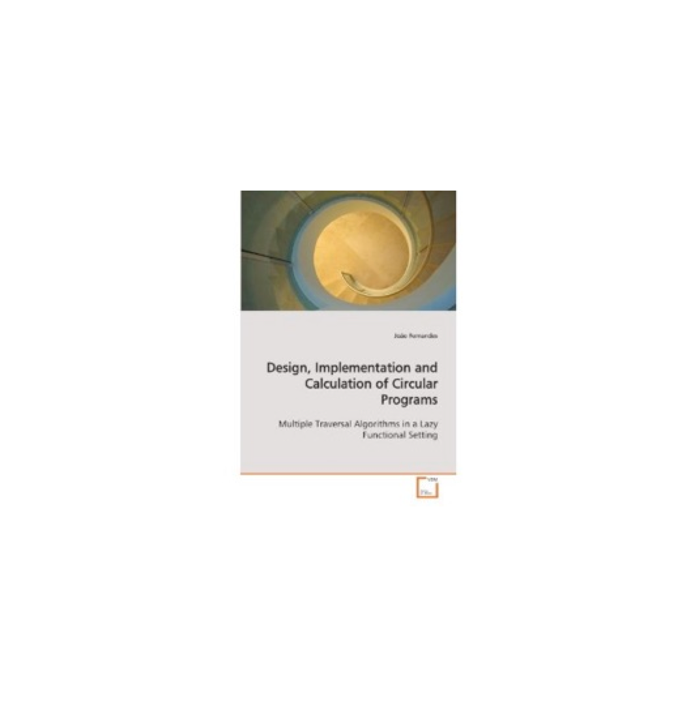

João Paulo Fernandes, Ph.D.

My research is focused on the rigorous analysis and transformation of software, with the general goal of optimizing its non-functional properties while still ensuring its functional correctness.
I am currently drawing a significant amount of my research efforts towards leveraging Quantum Computing to address computational problems that are considered intractable by classical means.
For almost 10 years now, I am also focused on optimizing the energy efficiency of software systems, an area in which I try to provide developers with information and tools to support the development of energy efficient software and at the same time that I seek to support end users, namely of mobile devices, in adopting more efficient usage patterns. In these contexts, I have founded/coordinate(d) and/or am involved in projects and initiatives such as GreenHub, Green Sw Lab, GreenHaskell and Sustrainable.
Currently, I am also a member of the Artificial Intelligence and Computer Science Laboratory of the University of Porto (LIACC).
In the past, I have held different types of positions in several institutions such as the University of Minho (Monitor, 2002-2004), the Polytechnic Institute of Porto (Assistant Professor, 2008-2010), the University of Porto, Faculty of Engineering (Assistant Professor, 2010-2012), the University of Beira Interior (Assistant Professor, 2012-2016) and the University of Coimbra (Assistant Professor, 2016-2020).
I have graduated in Mathematics and Computer Science from the University of Minho, in 2004 (best of class, with an average score of 17/20), having conducted my graduation thesis under the PURe project.
Later, in March 2009, I have received my Ph.D. degree from the same university, following my work on the Design, Implementation and Calculation of Circular Programs.
Visiting Associate Professor, New York University Abu Dhabi. On a leave from the Informatics Engineering Department of the Faculty of Engineering of the University of Porto, Portugal.
Find me at: [Google Scholar] [DBLP] [ACM DL]